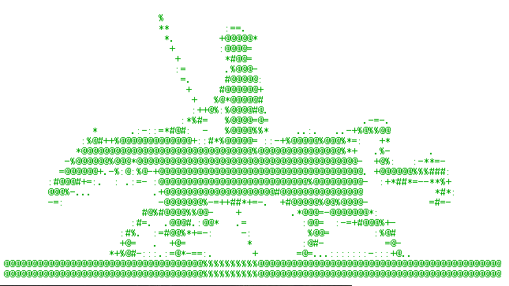

In recent years, I use Matlab for teaching the signal processing in industry area. Matlab is very convenience for doing this. But some students doesn't have one. For this purpose, I decide to write a small Matlab like APP by Python myself.
This summer, it was very hot. And it is impossible to go outside for my favorite bird watching. Programming in an air-conditioned room is my only choice.
The target is not so hard to realize as it seems to be. Three Python packages, Numpy, SciPy and Matplotlib, can do most of scientific work. But Lacking an efficiency APP designer and not so easy to use are only deficiencies.
To solve these problems, I write a APP designer based on Tkinter, and wrap a group of virtual instrument widget based on Tkinter and Matplotlib. May be, thus can let your Python programming for signal processing easier. If not so, just forget it.

Don_Quijote_de_la_Mancha
Chanllage, not ask result !
Lingsong HE, HUST, China, 2022.10.02